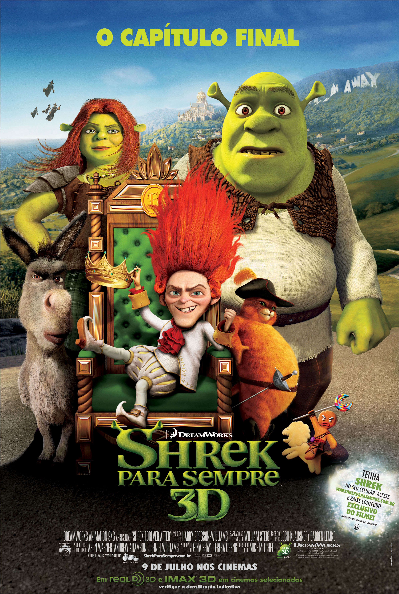
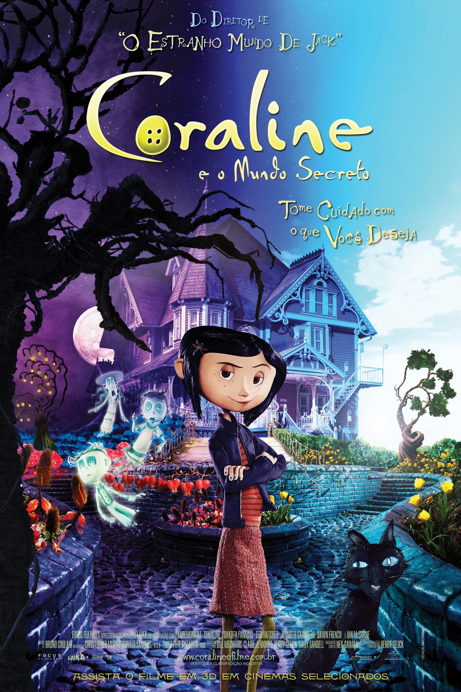

Emily Ramos
Aluna SENAI
Engenharia da computação / UNASP
Login!Engenharia da computação / UNASP
Login!

|
Shrek 1Em um pântano distante vive Shrek (Mike Myers), um ogro solitário que vê, sem mais nem menos, sua vida ser invadida por uma série de personagens de contos de fada, como três ratos cegos, um grande e malvado lobo e ainda três porcos que não têm um lugar onde morar. Todos eles foram expulsos de seus lares pelo maligno Lorde Farquaad (John Lithgow). Determinado a recuperar a tranquilidade de antes, Shrek resolve encontrar Farquaad e com ele faz um acordo: todos os personagens poderão retornar aos seus lares se ele e seu amigo Burro (Eddie Murphy) resgatarem uma bela princesa (Cameron Diaz), que é prisioneira de um dragão. Porém, quando Shrek e o Burro enfim conseguem resgatar a princesa logo eles descobrem que seus problemas estão apenas começando. |

|
Shrek 2Após se casar com a Princesa Fiona (Cameron Diaz), Shrek (Mike Myers) vive feliz em seu pântano. Ao retornar de sua lua-de-mel Fiona recebe uma carta de seus pais, que não sabem que ela agora é um ogro, convidando-a para um jantar juntamente com seu grande amor, na intenção de conhecê-lo. A muito custo Fiona consegue convencer Shrek a ir visitá-los, tendo ainda a companhia do Burro (Eddie Murphy). Porém os problemas começam quando os pais de Fiona descobrem que ela não se casou com o Príncipe (Rupert Everett), a quem havia sido prometida, e enviam o Gato de Botas (Antonio Banderas) para separá-los. |
|  |
Shrek 3Shrek (Mike Myers) está entediado. Sua antiga vida de aventuras foi substituída pela de pacato pai de família. Casado com Fiona (Cameron Diaz) e pai de três filhos, Shrek sente falta da adrenalina e da liberdade que tinha no passado. Para recuperá-los, ele firma um pacto com Rumpelstiltiskin (Walt Dohrm). Imediatamente Shrek é levado a uma versão alternativa do Reino de Tão, Tão Distante, onde Fiona é uma temível ogro e ele não é mais reconhecido pelo Burro (Eddie Murphy) e o Gato de Botas (Antonio Bandera), seus melhores amigos. |
|  |
CoralineUm mundo secreto se abre e realiza todos os seus desejos, mas com um preço. Caroline Jones (Dakota Fanning) precisa se adaptar à sua nova realidade e nova casa em Oregon. Incrivelmente entediada e sem a atenção dos pais, Coraline esbarra um dia com um gato preto e o neto da senhoria, que lhe entrega uma boneca de pano da jovem e lhe apresenta uma porta secreta. Através dela Coraline tem acesso a uma outra versão de sua própria vida, aparentemente bem parecida com a que leva. A diferença é que neste outro lado tudo parece ser melhor, inclusive as pessoas com quem convive. Coraline se empolga com a descoberta, mas logo descobre que há algo de errado quando seus pais alternativos tentam aprisioná-la neste novo mundo. |